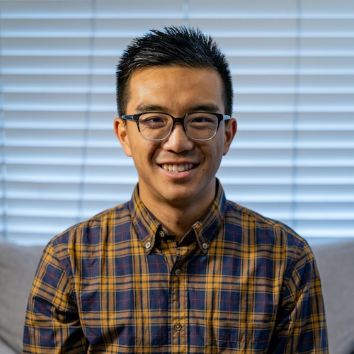

Davis Huang
Software Engineer
davishuang9@gmail.com
About Me
Hi! I’m a software engineer with experience in small companies on even smaller teams, finding efficient solutions to go from 0 to 1 with an innate focus on quality and robustness. I’m looking for an opportunity to take on greater challenges and continue to grow in a close-knit, mission-driven company.Experience
**Software Engineer** | Mosey
May 2023 - Oct 2024
- Internal tools roadmap
- Notifications
- Dynamic data
**Software Engineer** | Rippling
Mar 2020 - Mar 2023
- Co-lead numerous projects, including an onboarding experience for all companies joining Rippling, an automated employee verification process bringing in $1M net revenue, a redesign of the core employee list feature, and more
- Contributed to multiple cross-team initiatives including migrating core flows, supporting bulk approvals, improving security, and more
- Top 3 contributor to support issues and incidents, meeting resolution SLAs and driving root cause solutions
**Software Engineer** | Brightloom
Nov 2017 - Jan 2020
- Constructed the restaurant portal SPA from ground up to grant customers configuration access into our systems
- Rebuilt the main KDS (kitchen display system) as a fast and flexible web app that readily catered to partners’ needs
**Software Developer** | Nventi
Apr 2015 - May 2016
- Developed the initial proof of concept for a patent-search tool that attracted $100k from an angel investor
- Integrated automated web analytics to collect detailed user info and how users used the app
Skills
**Languages:** Typescript/Javascript, HTML/CSS, Python, Java
**Frameworks:** React, Django, Node
**Databases:** PostgreSQL, MongoDB
Education
BS in Electrical Engineering & Computer Science
UC Berkeley
Interests
- Basketball
- Photography
- Videography